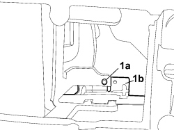
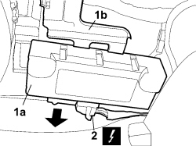

4450B91 TPMS SYSTEM CONTROL UNIT R R
- Path
- Procedures > 44 SUSPENSION AND WHEELS > 4450 HUBS AND WHEELS > 4450B WHEELS AND COMPONENTS > 4450B91 TPMS SYSTEM CONTROL UNIT R R
- Kind
- repair procedure (removal / refitting; the operation number is the code)
- Applies to
- all engines; all production periods
- Interactive page
- https://sloeber94.github.io/elrnDB-fCrm/en/#/194002345
Applies to: all engines; all production periods
 Removing
Removing
 Refitting
Refitting- Turn the ignition key to the OFF position and extract it.
- Disconnect the negative and positive battery terminals.
Description | Connector | |
|---|---|---|
BATTERY |
Op. 7040A45 RIGHT DASHBOARD SIDE TRIM - R.R.
Op. 5570T85 CD/AUDIO PLAYER LOADER - R R
1. Undo the nut (1a) securing the control unit mounting bracket (1b).

Applies to: all engines; all production periods
1. Push the control unit (1a) forwards and release it from the mounting bracket (1b).
2. Disconnect the electrical connection.
Description | Connector | |
|---|---|---|
2 | TYRE PRESSURE CONTROL UNIT |

Applies to: all engines; all production periods
Refitting
Removing- Check that the control unit is not damaged.
- Connect the electrical connection.
Description | Connector | |
|---|---|---|
TYRE PRESSURE CONTROL UNIT |
- Fit the control unit on the mounting bracket and tighten the fixing bilt.
Op. 5570T85 CD/AUDIO PLAYER LOADER - R R
Op. 7040A45 RIGHT DASHBOARD SIDE TRIM - R.R.
- Connect the negative and positive battery terminals.
Description | Connector | |
|---|---|---|
BATTERY |
- Carry out the self-learning produced for the control unit.
Topics linked from this page (5)
- 5570T85 CD/AUDIO PLAYER LOADER - R R
- 5580C AIR BAG SYSTEM
- 7040A45 RIGHT DASHBOARD SIDE TRIM - R.R.
- A001 BATTERY
- M047 TYRE INFLATION PRESSURE CONTROL UNIT
Topics that link to this page (8)
- 5040C10 AIR CONDITIONING CASING - R.R
- 5040C50 AIR CONDITIONING HEATER RADIATOR - R.R.
- 5040C64 A/C EVAPORATOR - R+R
- 5040D80 AIR CONDITIONER SYSTEM WIRING BUNDLE - R R OR REPLACE
- 5040D94 AIR CONDITIONING LEFT UPPER AIR DISTRIBUTION FLAP MOTOR (DEFROST) - R.R
- 5505C10 FRONT CROSSMEMBER WIRING - R.R
- 5505C31 BUILT-IN WIRING UNDER DASHBOARD - R.R.
- 7040A97 INSTRUMENT PANEL TRIM SUPPORTING CROSSMEMBER - R.R